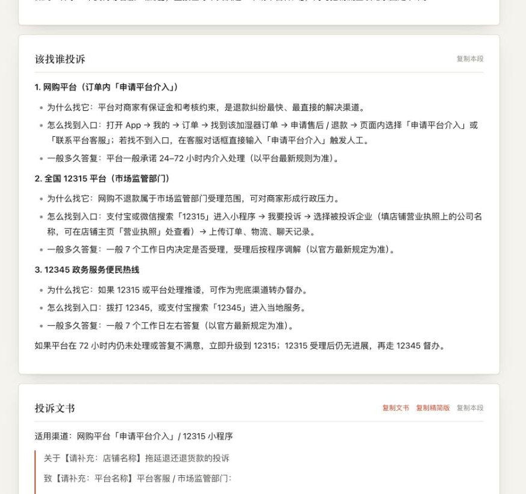

Complaint Helper
For ordinary people facing a consumer dispute or a service problem. The problem: you don't know whether to go to the merchant, the platform, 12315 or 12345, you don't know how to write a complaint, and when there's no reply you don't know how to follow up, so you give up. The idea came from a wish in the Emergence Award wish pool, "help me write a complaint": 516 votes, nobody had built it. Describe what happened and in 30 seconds you get who to contact, a complaint letter ready to submit, and a follow-up schedule.Live site ↗
How it works
Explain it clearly, and you can file it
BeforeDon't know who to contact, how to write it, or what happens nextAfterChannel, letter, evidence and timeline in one go
01Describe what happened👤 Human
- Write what happened, what you want, which city, and what you've already done; upload chat and order screenshots and AI reads the text out of them; pick a tone: mild, firm, or tough
02Decide who to contact🤖 AI
- A channel ladder instead of a pile of hotlines: platform first, then 12315, then 12345, each with where to file and how long a reply takes; channels you've already tried are skipped to the next level
03Write the letter🤖 AI
- A complaint letter you can copy and submit as is, plus a 200-character short version; uses only the facts you gave, with "please add" placeholders for anything missing; no invented order numbers or amounts
04Evidence and follow-up🤖 AI
- Evidence checklist: what you have, what's missing, where to get it; follow-up timeline: escalate after N days without a reply; success check: says plainly where the demand is unreasonable and offers an alternative that is more likely to be met
What it looks like

